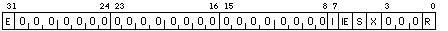

-
E = ERR or error bit. (set by hardware, write clears)
I = INT or interrupt bit. (set by hardware, write clears)
IE = INT_ENB or interrupt enabled bit (read/write)
S = SGL or Single increment bit (write only)
X = XFR or transfer bit (write only)
R = RUN (read/write)
The ICCS is a read/write register that contains control and status information for the interval clock. When the RUN bit is 1, the ICR register is incremented every microsecond (instruction on MACVAX). Writing to the XFR (transfer) bit will copy the NICR to the ICR. Writing to the SGL (single increment) bit when the RUN bit is zero will increment ICR. When the INT_ENB (interrupt enable) bit is one an overflow of the ICR will generate an interrupt at IPL 24. The INT (interrupt) bit is set by hardware whenever the ICR overflows. It can must be cleared by the clock interrupt service routine by writing the the INT bit (ie.. writing a one to it clears it). The ERR (error) bit is set by hardware when an overflow occurs and the INT bit is already set. It may be cleared by writing a one to it.

The NICR is a write only register that holds the clock count in microseconds to be loaded into the ICR when the ICR overflows (ie.. after an increment its value is zero) or when the XFR (transfer) bit of the ICCS is written to. As the ICR register is incremented, not decremented, the value stored in NICR should be set to the two's complement of the interval wanted.
The ICR is a read only register that is incremented every microsecond on a VAX (every instruction on MACVAX) while the RUN bit of the ICCS is one. It can also be incremented by writing to the SGL (single increment) bit of the ICCS. It is loaded from the NICR when the XFR (transfer) bit of the ICCS is written to or when the ICR overflows (ie.. after an increment its value is zero). An overflow will also set the INT (interrupt) bit of the ICCS. If the INT bit was already set the ERR (error) bit will be set to indicate one or more clock interrupts have been missed. If the INT_ENB (interrupt enable) bit is one, an overflow will generate an interrupt at IPL 24.
The MacVAX simulator provides a Time of Year processor register using the Macintosh internal clock. The VAX clock has a resolution of 10ms. As the Macintosh clock has a resolution of 1 second, the low bits of the register will always be 0. Thus the clock will overflow in 497 days. Note that the interval timers, above, operate on the basis that one instruction takes 1ms and they are only incremented when an instruction has been executed (i.e. they do not increment while MacVAX is halted. The TODR gets its time from the Macintosh clock, which is always running. TODR is accessed with mfpr #TODR.